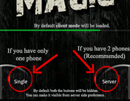
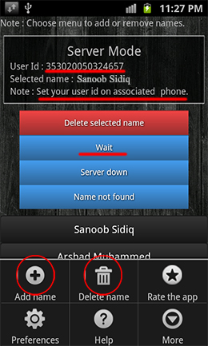
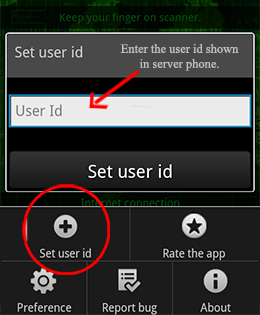
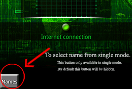

How to use Fingerprint Magic?

Fig.1
You can use this app in 2 modes.
- Multi Mode (Recommended)
- Single Mode
- Multi Mode
Multi mode is completly fool proof.
It requires 2 android phones with this app installed along with internet connection. And you should know about 2 things called server phone and client phone.
- Server
One of the phones is assigned as server phone. As you can see in Fig.1 there is a hidden button on the loading screens bottom right corner. Select this button to assign the phone as server. This phone should be hidden from the users view. You can change the visibility of hidden buttons from server side preference.

Here you can set names of all
your friends and you can select the names of the friend when he/she is scanning his/her fingerprint on client phone.
A user id will be generated by server. You can see that user id in above figure.
You have to set this user id on the client phone to communicate with this server.
- Delete selected name :
This button is using for deleting the current selected name from server. This will make the client to show server down.
- Wait :
In case a new person (whose name is not yet set in server phone) suddenley comes to scan his/her fingerprint, at that time you can use wait button.
It will make the client to wait for a new name from the server which will be set by the user then and there.
- Server down :
This button is using for client to show server down message.
- Name not found :
This button is using for client to show the fingerprint scanned person's name is not available in server.
- Client
The second phone we call it as client phone. And it will be shown to the user to show magic by scanning their name.
Note : The application opens by default in the client mode.

To communicate with the server phone you have to set the user id which is shown in server phone as shown in above figure.
- Single Mode
Don't worry if you don't have 2 android phones or internet connection you can use single mode. To select single mode, you have to click on the hidden button which is in bottom left corner of loading screens (Refer Fig.1).

Once you reached single mode then you have to add your friends names. To do that, click on the hidden button at bottom left corner of single mode fingerprint scannig screen. Which will come with a new window and you can get almost all features of server mode over there.
|